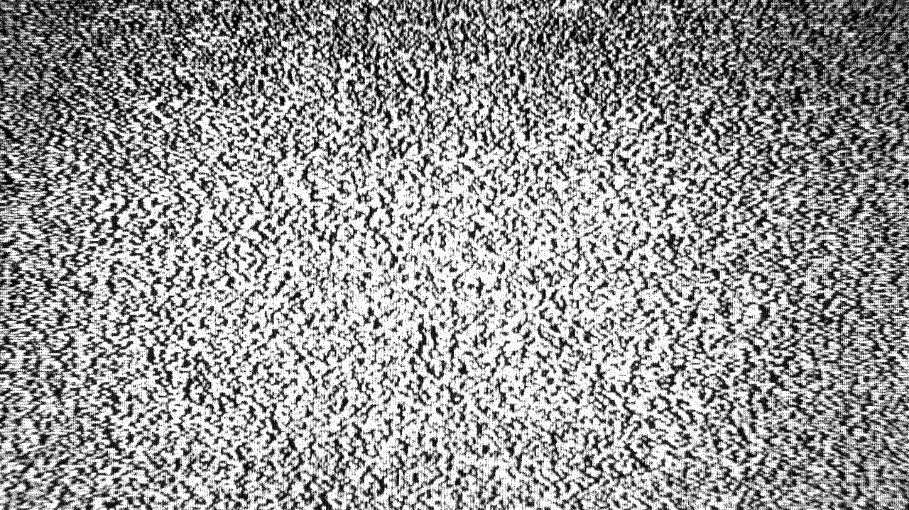

Música
Oito da noite.
O céu escuro, encoberto por nuvens espessas e cinzentas, carregava o peso de uma melancolia habitual de um cenário onde o sol se cansou de dar as caras, como um velho contador de histórias cansado de repetir suas narrativas para uma plateia distraída, ele parecia ter desistido de disputar atenção com um mundo que já não se importava em escutar.
Nesse cenário, acabei decidindo ir ao mercado e comprar algumas besteiras para comer. Mais especificamente, lasanhas de sabores variados e escolhidos com um nível de critério inexistente. Eu apenas pegava as embalagens que pareciam minimamente apetitosas e as colocava no carrinho, guiada muito mais pela busca de conforto do que por qualquer planejamento.
Eu estava com uma fominha. Claro que não uma fome daquelas capazes de me transformar numa criatura irracional vasculhando armários às três da manhã. Era apenas um vazio discreto no estômago que se recusava a desaparecer. Inclusive, se for pra ser completamente sincera, eu nem sequer precisava ter ido ao mercado.
Minha geladeira estava longe de estar vazia. Havia ingredientes suficientes para preparar diversas refeições por mim mesma. Eu poderia apenas ter ficado em casa e improvisado alguma coisa. Por causa disso, me peguei questionando várias vezes se aquela saída realmente fazia sentido ou se eu estava apenas procurando uma desculpa para ocupar a cabeça por algumas horas.
Mas, no fim, a fome ainda existia, certo?
E, bem, prevenir sempre pareceu mais sensato do que remediar. Além disso, considerando minha disposição para cozinhar nos últimos dias, adquirir algo pronto parecia uma alternativa beeeeem mais viável.
Preguiça. Falta de esforço. Os dois?? Sim, eu sei que deve ser o que você pensa. Mas, aí, tenta me dar algum crédito. Há um bom tempo, encontrar motivação para qualquer atividade tem se tornado bem difícil. Cozinhar, levantar da cama em horários razoáveis.. você entendeu, né?
Enquanto caminhava de volta para casa, fechei os olhos por alguns instantes. A chuva caía em uma garoa fina e constante, suas gotas frias deslizavam pelo meu rosto sem pressa. Ao mesmo tempo, a brisa noturna envolvia meu corpo com um afeto indiferente, daqueles que não ligam sobre como você se sente, mas que ainda assim te acolhe.
Talvez isso soe esquisito, talvez não, mas não vou mentir que eu gosto dessa sensação, as vezes. Gosto do toque da chuva. Do vento frio. Do silêncio que existe entre um pensamento e outro quando o mundo parece distante por alguns segundos. Isso me faz sentir algo, o que já é melhor do que nada.
Permaneci assim por um breve momento, permitindo que aquela combinação de água, vento e monotonia anestesiasse minha mente. Mas, como quase tudo que é agradável nessa vida parece ter um prazo de validade bem curto, meu pequeno transe foi interrompido de uma forma não muito boa.
Tudo começou com uma buzina. Depois com outra. Até o som começar a rapidamente crescer e se transformar em algo próximo de um alarme de emergência.
Eu abri meus olhos na hora, e então percebi que havia avançado alguns passos para dentro da rua sem sequer notar. Meu corpo caminhara no piloto automático enquanto minha atenção vagava por qualquer lugar que não fosse a realidade.
Com isso, notei que um carro vinha na minha direção com uma velocidade considerável. Eu reagi por puro reflexo, recuando para a calçada e evitando, por questão de segundos, aquilo que poderia ter se transformado em uma tragédia.
Foi por pouco. O veículo passou tão perto que consegui sentir até mesmo o deslocamento do ar. Depois, o motorista, que também não parecia estar vivendo um dos melhores dias da própria existência, gritou:
“OLHA POR ONDE ANDA, SUA IDIOTA!”
Típico.
Mais uma daquelas frases lançadas por estranhos irritados, cuspidas com a naturalidade de quem sequer pensa antes de falar. Não era exatamente uma novidade. Eu já tinha escutado coisas parecidas tantas vezes ao longo da vida que já nem me surpreendo mais. Talvez eu até conseguisse recitar algumas delas de cor.
Mas a demonstração de gentileza do sujeito ainda não havia terminado. Logo após passar por mim, ele acelerou justamente sobre uma enorme poça acumulada na lateral da rua, o que fez com que a água explodisse em um jato lamacento que se atirou direto nas minhas roupas, no meu rosto e nos meus pensamentos. Uma ducha involuntária, fria e desagradável.
Observei o carro desaparecer ao longe sem sequer considerar a possibilidade de gritar de volta, por mais que eu achasse que fosse algo que qualquer pessoa faria no impulso. Eu não senti raiva, nem nada. Apenas aceitei.
Por que eu não aceitaria? A culpa tinha sido minha de novo. Fui eu quem atravessou sem prestar atenção. Eu quem se distraiu. Eu quem permitiu que a mente vagasse para longe demais.
Então.. qual seria o propósito de apontar o dedo para alguém quando eu já estava ocupada demais apontando-o para mim mesma, não é?
No fim, eu continuei caminhando, carregando comigo a água nas roupas e no humor, junto com a certeza de que eu iria pegar uma gripe. Até porque, se eu não pegasse uma depois disso, seria um milagre.
Quando finalmente cheguei em casa, apoiei as sacolas encharcadas sobre a mesa com o máximo de cuidado que consegui reunir naquele momento. Algumas gotas escorreram pelo plástico e formaram pequenas poças sobre a superfície, como se até minhas compras tivessem voltado daquela caminhada em estado de exaustão.
Em seguida, ergui o olhar e observei a sala. Tudo permanecia exatamente como eu havia deixado. Imóvel e silenciosamente cúmplice do meu cansaço.
Soltei um longo suspiro, um gesto automático e típico de quem ainda alimenta a ilusão de que respirar mais fundo pode, de alguma forma, resolver os problemas da própria existência.
Claro, não resolve. Mas ainda assim, continuei fazendo.
Porém, eu nem sequer consegui concluir meu breve momento de autocomiseração dramática. Pois, de repente, uma vibração baixa e persistente rompeu o silêncio do apartamento.
Bzz.Bzz.
Bzz.
O som não era alto, mas possuía aquela insistência irritante de algo que se recusa a ser ignorado. Nem precisei procurar sua origem, porque eu já sabia que se trava do meu celular. Ele permanecia largado sobre o braço do sofá, exatamente onde o havia deixado antes de sair. Abandonado e esquecido. Quase ofendido pela falta de atenção.
A tela acendia e apagava em intervalos regulares, lançando pequenos flashes de luz pelo ambiente escurecido. Daquele jeito, começou a parecer cada vez menos uma notificação e passou a tornar mais uma tentativa desesperada de chamar minha atenção, como um animal de estimação eletrônico implorando por reconhecimento.
Franzi a testa de leve.
“Quem será agora?”, pensei, acompanhada daquela velha combinação de sentimentos contraditórios.
Parte de mim não queria lidar com ninguém naquela hora. Outra parte, porém, nutria uma expectativa de que talvez fosse algo bom.
Então caminhei até o sofá e estendi a mão para pegar o aparelho. E, assim que meus olhos pousaram sobre a tela, percebi que teria sido mais prudente eu ignorar aquelas vibrações, fingir que não ouvi nada e só resolvido verificar aquilo lá pra depois de amanhã.

Era a Ashley. Minha amiga dentro do colégio e fora dele também.
Ela tinha organizado mais um de seus incontáveis rolês improvisados. Ashley tinha um talento sobre-humano de transformar as decisões impulsivas dela em eventos coletivos. Era impressionante, bastava surgir uma ideia aleatória em sua cabeça, e poucas horas depois nosso grupo já estava reunido em algum lugar, sem compreender exatamente como aquilo tinha acontecido. Dessa vez não foi diferente. Ela chamou não apenas a mim, mas também o restante dos insuportáveis que compunham nosso círculo de amigos.
Mas talvez eu esteja mesmo ficando meio maluca. E talvez, só talvez, seja a hora de parar de me esconder atrás de desculpas esfarrapadas.
E, como sempre, a programação seguia o mesmo roteiro de costume. Sair sem destino definido, gastar dinheiro com coisas que não precisávamos e transformar situações banais em coisas que seriam lembradas até a próxima geração.
Acho que já está mais do que óbvio que eu não fui. Inventei uma desculpa qualquer. Algo genérico o suficiente para parecer plausível, mas vago o bastante pra evitar mais perguntas. Eu nem lembrava mais o que eu tinha dito, acho que foi algo a ver com o cansaço e o trabalho.
Quero dizer, olhando agora, isso poderia ser considerado uma desculpa? Não é como se tivesse sido mentira ou algo assim.. (idiota.)
Enquanto observava as mensagens na tela, não consegui evitar de pensar nela por alguns instantes.
Ashley sempre foi o motor do nosso grupo, e ainda acho que essa definição é insuficiente. Diria que ela é como o coração. Era ela quem mantinha todos conectados. Puxava conversas quando o silêncio surgia, transformava encontros comuns em lembranças especiais sem sequer perceber que estava fazendo isso.. até fazia questão de incluir alguém que julgasse estar isolado. Eu que o diga.
Essa mulher tem uma energia difícil de explicar. Uma espécie de luminosidade própria, como se carregasse um pequeno sol dentro do peito e distribuísse seus raios pra qualquer pessoa ao redor. Seu carisma não era brincadeira. Era contagiante a ponto de derrubar barreiras sociais em questão de minutos. Não importava se eram colegas, desconhecidos ou pessoas que ela jamais voltaria a encontrar.
Ashley conversava e, de alguma forma, funcionava. É sério.
Eu já a tinha visto inúmeras vezes iniciar diálogos espontâneos com completos estranhos enquanto aguardávamos numa fila, caminhávamos pela rua ou esperávamos o ônibus. De alguma forma, ela sempre encontrava assunto. E as pessoas pareciam imediatamente gostar dela.
Digamos que é quase impossível não gostar. Ela enxergava valor nos outros antes mesmo que eles próprios conseguissem enxergar, fator esse que, às vezes, me leva a uma observação um tanto quanto curiosa: parecia que essa energia ficava ainda mais intensa quando ela estava perto de mim, como se ela estivesse muito mais “explosiva” e solta seja para falar suas baboseiras ou qualquer outra coisa.
Eu consigo aceitar que deve ser apenas uma impressão. Afinal, eu tinha plena consciência de que costumava analisar demais coisas simples que nem uma idiota. Também pode ser só implicância, afinal, ela só gosta de mim, gosta de demonstrar esse afeto sem reservas. Era apenas parte da personalidade dela.
Mas.. eu não sei bem como explicar. Por que parece tanto que isso é tão específico com a minha pessoa? Se for o caso, eu não consigo me enxergar da mesma forma que ela enxerga. Porque, na minha própria avaliação, não tem nada particularmente especial aqui. Nada extraordinário que justifique tanto interesse. Mas, mesmo assim, ela permanece. Mensagem pós mensagem, convite por convite.
Eu não entendo.
Soltei um longo suspiro com a tela do celular ainda acesa. Eu já havia abandonado qualquer esperança de escapar daquela conversa. As notificações já tinham se acumulado o suficiente para tornar impossível fingir que eu não as vi, eu e Ashley sabíamos disso.
Diante disso, apoiei a cabeça no encosto do sofá, respirei fundo e comecei a digitar.
Eu fechei o aplicativo de mensagens e deixei o celular cair displicente sobre o sofá. O aparelho afundou um pouco entre as almofadas, como se também estivesse cansado demais para continuar participando da minha vida. Em seguida, me levantei e caminhei até a cozinha.
As sacolas de compras ainda estavam sobre a mesa, úmidas pela chuva que eu havia trazido comigo. Aproximei-me delas e retirei uma das embalagens de lasanha com cuidado, observando-a por alguns segundos. Sei que parece uma informação inútil, mas eu gosto muito de lasanha. Muito mesmo.
Às vezes, quando minha mente decide se desligar, chego ao ponto de me imaginar mergulhando em uma piscina preenchida por elas. Com camadas intermináveis de massa, molho e queijo se estendendo até onde a vista alcança.
Pode rir. Eu também riria. É um pensamento ridículo, infantil e sem nenhum sentido. Mas, honestamente, alguns dos pensamentos mais bobos costumam ser os mais eficientes quando se trata de arrancar um sorriso de dias monótonos. Então, eu não consegui evitar.
Sem prolongar a cerimônia, rasguei o plástico da embalagem com a unha e caminhei até o micro-ondas. Coloquei a lasanha em seu interior, ajustei o tempo para três minutos e pressionei o botão de início. O aparelho respondeu com seu clássico bip eletrônico e, logo depois, o prato começou a girar. Lento e perfeito.
Fiquei observando por alguns instantes aquela rotação hipnotizante enquanto os números do visor diminuíam numa velocidade desafiadora à qualquer nível de urgência. Três minutos nunca passam tão devagar quanto quando você está esperando comida, é incrível.
Abandonei a vigília culinária e voltei pra sala, me jogando no sofá mais uma vez. Em seguida, peguei o controle remoto e liguei a televisão, determinada a tentar encontrar alguma forma de entretenimento enquanto a lasanha terminava de esquentar. Mas acho que essa foi uma decisão meio ingênua da minha parte. Porque bastaram alguns minutos para eu perceber que a programação daquela noite parecia ter sido elaborada pra não colaborar.
Troquei de canal uma vez. Depois outra. E mais outra. Porém, pra minha GRANDE sorte, nenhum deles parecia oferecer algo remotamente interessante.
Em um noticiário, apresentadores comentavam sobre a previsão do tempo. Pelo visto, os dias frios e chuvosos que já acompanhavam a cidade pretendiam ficar ainda mais intensos ao longo da semana. De fato, uma informação válida, útil e incapaz de prender minha atenção.
Troquei de canal de novo. Agora era uma série dramática. Uma cena emocionalmente carregada ocupava a tela. Os personagens discutiam enquanto uma trilha sonora melancólica tentava convencer o espectador a sofrer junto com eles. Eu até podia assistir, mas já estava carregando os meus próprios dramas, não sentia necessidade de adotar os de personagens fictícios também.
Mais um clique, outro canal. Dessa vez, fui recebida por uma cena grotesca de um filme de terror. Sangue, gritos e órgãos cuja localização anatômica eu preferia não conhecer. Tudo exibido com um nível de detalhe desnecessário.
— Ugh, não. Só não. — murmurei para mim mesma, fazendo uma careta na mesma hora.
Meu estômago já estava aguardando uma lasanha. A última coisa de que ele precisava naquele momento era assistir alguém sendo brutalmente mutilado em alta definição. Então troquei de canal de novo antes que as imagens resolvessem se instalar na minha memória de forma permanente.
Mas, quando troquei de canal mais uma vez, acabei encontrando apenas a ausência completa de algo.

A tela exibiu apenas uma estática. Nenhum filme, programa ou apresentador. Apenas um vazio eletrônico, como se aquele canal marcasse o “fim da linha”. O último degrau daquilo que a televisão tinha a oferecer naquela noite.
O chiado constante formado por incontáveis fragmentos de som sem significado, ecoava pelos cômodos como uma trilha sonora improvisada para o nada, preenchendo a sala. Algumas pessoas consideram esse tipo de barulho insuportável. Outras podem o achar estranhamente reconfortante, como uma espécie de cobertor auditivo capaz de ocupar o silêncio sem realmente exigir atenção. Pessoalmente, eu nunca consegui decidir em qual dos dois grupos me encaixava.
Deslizei do sofá até o tapete e me sentei no chão, cruzando as pernas diante da televisão. E ali fiquei. Observando uma tela que não mostrava absolutamente nada.
Era curioso. Mesmo sem imagens, sem narrativa ou propósito, aquele amontoado de pontos brancos e pretos parecia conseguir prender minha atenção melhor do que todos os outros canais juntos. Meu olhar se perdeu naquela confusão visual enquanto os sons ao redor se misturavam lentamente
O chiado da televisão. O zumbido contínuo do micro-ondas. Os estalos ocasionais da chuva contra as janelas. Tudo começou a se fundir numa espécie de orquestra formada por eletrodomésticos e mau tempo. E, por algum motivo, aquilo parecia funcionar. A televisão despejava sua cacofonia distópica pela sala enquanto o micro-ondas respondia com seu ronronar mecânico e perfeitamente funcional. Dois aparelhos cumprindo tarefas completamente diferentes, mas coexistindo em uma harmonia estranha.
Os segundos continuaram passando, arrastando-se como se o próprio tempo tivesse decidido tirar uma folga. E eu permaneci ali, observando o vazio eletrônico diante de mim como alguém assistindo a uma obra de arte que não entendia, mas fingia entender.
Até que a fome voltou a reivindicar sua presença mais uma vez. Com a lentidão característica de quem trava uma batalha diária contra a própria disposição, levantei-me do chão e caminhei novamente até a cozinha.
Meu primeiro olhar foi direto para o visor do micro-ondas. Ainda faltava 1 minuto e 58 segundos. Uma eternidade, basicamente.
Então observei a lasanha. E, meu Deus, aquilo era lindo. A superfície começava a adquirir um tom dourado irresistível, pequenas bolhas surgiam entre as camadas de queijo derretido, estourando delicadamente aqui e ali. O molho borbulhava com uma lentidão hipnótica.
E o aroma.. ele se espalhava pela cozinha inteira como uma promessa de que existia alguma forma de conforto me esperando ao final daqueles intermináveis cento e dezoito segundos.
Meu estômago, por sua vez, já havia abandonado qualquer tentativa de manter a dignidade. O coitado se contorcia em protesto. Roncava de maneira tão dramática que, se alguém ouvisse sem contexto, provavelmente imaginaria que eu estava perdida havia dias no meio de um deserto, sobrevivendo apenas de arrependimentos e más decisões.
E, enquanto encarava aquela lasanha girando lentamente atrás da porta de vidro, eu não tinha certeza se conseguiria esperar aqueles dois minutos restantes sem começar a considerar medidas desesperadas.
No segundo seguinte, toda a pouca dignidade que eu ainda possuía abandonou o recinto. Sem conseguir me conter, joguei os braços para trás de forma exagerada e comecei a dar pequenos saltos no lugar como uma criança impaciente aguardando um presente de aniversário.
— Vai loooooogooooooo! Eu tô com fooooooomeeeeeeeeeeeee! — reclamei para o micro-ondas com a seriedade de alguém negociando questões de vida ou morte. — Eu quero minha lasanhaaaaaaaaaaaa! Eu vou morreeeeeeeeeeeeeeeer!
O contador, contudo, não demonstrou a menor compaixão. Quanto mais eu implorava, mais parecia que os números diminuíam para me provocar. Naquele instante, era impossível me convencer de que aquele aparelho não estava fazendo aquilo de propósito.
Cruzei os braços, depois descruzei. Inclinei o corpo para frente. Observei a lasanha girando. Observei o contador. Observei a lasanha novamente. Mas, para a surpresa de ninguém, nenhuma dessas estratégias acelerou o tempo. Seria idiota da minha parte acreditar que aceleraria.. mas poderia. Droga.
No meio daquela encenação vergonhosa, acabei abrindo um sorriso torto que surgiria no rosto de qualquer um quando se percebe o quão ridícula eu estava sendo. Fiquei ali por mais alguns segundos, dividida entre a vergonha e o entretenimento que a própria vergonha proporcionava.
Uma parte de mim observava toda a situação com uma expressão imaginária de desaprovação, perguntando para mim o motivo real de eu ter feito isso. Por outro lado, havia uma segunda parte que, embora não se orgulhasse, também não estava nem um pouco arrependida.
Porque, convenhamos, eu estava sozinha. Não havia testemunhas, câmeras ou qualquer ser vivo por perto para registrar aquele momento de carência alimentar. Segredo, ok? Nada de espalhar!
DING DONG! DING DONG!
O toque repentino da campainha ecoou pela casa e me arrancou do meu pequeno momento de vergonha com um sobressalto. Por um segundo, tive a sensação de que alguém havia me “pego no flagra”, se é que você me entende. Permaneci encarando a porta por alguns instantes, processando o susto, antes de finalmente caminhar até ela.
Enquanto atravessava a sala, minha cabeça já começou a formular hipóteses sobre quem poderia estar do outro lado. A primeira suspeita foi Ashley. Depois da nossa conversa de poucos minutos atrás, não seria nada surpreendente se ela tivesse decidido aparecer de surpresa para tirar satisfações cara a cara. Na verdade, quanto mais eu pensava, mais essa possibilidade parecia fazer sentido.
DING DONG! DING DONG!
A campainha tocou outra vez.
DING DONG! DING DONG!
E de novo.
No instante seguinte, quem quer que estivesse do lado de fora resolveu abandonar qualquer traço de civilidade e praticamente se pendurou no botão da campainha naquela altura, disparando uma sequência desesperada de toques, como se a própria vida dependesse de eu abrir aquela porta nos próximos cinco segundos.
Suspirei profundamente e revirei os olhos, pois já não me restavam dúvidas naquele momento. Aquilo era tão exagerado que só podia ser obra da Ashley. Era o tipo de comportamento impulsivo que eu esperava dela.
— Tá bom, Ashley! Para com essa mer—
Abri a porta sem o menor cuidado, interrompendo minha própria frase no meio do caminho. Minha intenção era despejar uma bela lista de palavrões em quem eu já tinha decidido, por conta própria, ser a culpada por aquele atentado à minha paciência.
Só que... não tinha ninguém.
Permaneci imóvel na entrada, olhando de um lado para o outro da rua, depois para a calçada, para o jardim e até para os cantos mais improváveis, como se alguém pudesse surgir dali a qualquer momento. Mas não, não tinha nada. Nada além da minha cara de idiota que encarava o vazio na esperança de encontrar qualquer sinal de quem havia tocado a campainha.
Passei a mão pelo rosto e deixei escapar um resmungo composto por um amontoado de palavras desconexas. Sabe o tipo de reclamação que surge quando a irritação é tão grande que nenhum palavrão parece suficiente para descrever a situação? Onde o cérebro entra em curto-circuito, mistura meia dúzia de sílabas aleatórias e torce para que aquilo transmita, de alguma forma, o tamanho da indignação?
Bom, era esse o nível da minha situação.
Ao que tudo indicava, não passava de alguém sem nada de útil pra fazer e que decidiu transformar a vida do primeiro vizinho que encontrou em uma forma barata de entretenimento. O que eu realmente não conseguia entender era por que esse azar escolheu justamente a minha porta. Existe algum prazer oculto em apertar campainhas aleatórias e sair correndo como uma criança de oito anos? Porque, se existe, eu não consigo compreender nem se eu tentar bastante.
É só irritante.
Teria sido muito melhor se fosse só a Ashley. Pelo menos ela teria um motivo pra estar ali, ainda que fosse só pra encher o meu saco.
Bip!
Um som curto e agudo ecoou atrás de mim, interrompendo o fluxo dos meus pensamentos e arrancando minha atenção da porta de entrada. A pequena explosão sonora foi suficiente para dissolver parte da irritação que ainda insistia em ocupar espaço na minha cabeça.
Veio do micro-ondas, o que significava que a hora da espera havia, em fim, acabado. Minha lasanha estava pronta. Comida salvando vidas, bebê.
— Até que enfim, hein? — murmurei para mim mesma, lançando um olhar por cima do ombro em direção à cozinha.
Sem perder mais um segundo, fechei a porta de casa e voltei quase correndo para lá. A fome, que já estava me torturando havia um bom tempo, parecia comandar cada passo que eu dava. Ao alcançar o balcão, abri a porta do micro-ondas com o cuidado religioso de quem está prestes a tocar uma relíquia sagrada. O aroma da lasanha escapou na mesma hora, quente e convidativo, fazendo meu estômago protestar com ainda mais intensidade.
Estendi as mãos para retirar a travessa.. é, no caso, eu tinha tentado.
— AAAAAIIIIII! Minha mão! — gritei no mesmo instante em que meus dedos tocaram a porcelana escaldante.
Instintivamente, recuei e segurei os três dedos centrais da minha mão esquerda com a direita, enquanto uma dor intensa percorria minha pele. A sensação era como encostar diretamente em uma barra de ferro recém-saída de uma fornalha. Em questão de segundos, a região já começava a adquirir um tom avermelhado.
— Mas que porra... Por que caralhos eu tentei pegar isso sem uma luva?! — resmunguei entre os dentes, balançando a mão no ar numa tentativa inútil de aliviar a queimadura. — Aiiii, Miska. Você é uma idiota!
É, como pode ver, eu fiquei tão presa aos resquícios da irritação causada pela campainha e tão desligada por causa da fome que acabei esquecendo de colocar luvas térmicas. O resultado não poderia ter sido outro, acabei me queimando.
Tava doendo para um senhor caralho. Aquela ardência pulsava, acompanhada por uma sensação de latejamento tão fodida que parecia que meus próprios dedos tinham adquirido um coração. Por alguns segundos, fiquei desnorteada, andando de um lado para o outro da cozinha enquanto soltava reclamações que nem eu mesma conseguia entender. Cheguei até a cogitar, por um brevíssimo instante, que fosse desmaiar de tanta dor.
Tá... talvez isso tenha sido um pequeno exagero. Mas, convenhamos, queimaduras sempre conseguem doer muito mais do que deveriam.
Mas.. pode-se dizer que essa mesma dor, de certa forma, me manteve de pé, ou melhor, me empurrou até o banheiro. Assim que entrei, abri a torneira sem perder tempo e coloquei os dedos queimados sob a água corrente fria. Permaneci ali por algo entre dez e vinte minutos, sei lá, tava com muita dor para prestar atenção no tempo. Só sabia que não pretendia tirar a mão dali enquanto a sensação de estar sendo cozinhada viva não diminuísse.
E valeu a pena. A cada minuto, o ardor perdia um pouco da intensidade, dando lugar a um alívio que parecia milagroso. A dor não desapareceu por completo, longe disso, mas deixou de ser aquela tortura incessante que fazia qualquer tentativa de raciocínio impossível. Quando finalmente senti que conseguia mexer os dedos sem querer amaldiçoar toda a minha árvore genealógica, fechei a torneira e procurei uma faixa de gaze no armário do banheiro.
Com cuidado, comecei a enfaixar os três dedos queimados, um de cada vez, evitando apertar demais para não piorar o desconforto.
— Usar luvas da próxima vez. Entendeu a lição, Miska? — resmunguei para mim mesma, concentrada em fazer um curativo decente.
Inclinei a cabeça de leve, como se estivesse esperando uma resposta.
— É... acho que entendi. Vou tentar lembrar disso na próxima.
Depois de terminar o curativo, conferi se a gaze estava firme o suficiente e deixei o banheiro. Desci as escadas em direção à sala e, de lá, retomei meu caminho até a cozinha. A essa altura, a lasanha certamente já não estava mais tão quente quanto antes. Talvez tivesse até esfriado além do ideal.
Mas, de verdade? Depois de tudo o que aconteceu, a temperatura era o menor dos meus problemas. Tudo o que eu queria naquele momento era conseguir comer em paz, passar alguns minutos sem ser interrompida por campainhas, queimaduras ou qualquer outro desastre doméstico.. ah, e um analgésico também seria muito bem-vindo.
Mas, foi justamente quando eu acreditava que, enfim, conseguiria voltar ao meu único objetivo daquela noite que outro obstáculo resolveu surgir. O toque de chamada do meu celular ecoou pela sala.
Suspirei profundamente e virei a cabeça na direção do sofá, onde havia largado o aparelho minutos antes. A tela piscava, insistente, exigindo minha atenção como se aquele fosse o assunto mais urgente do planeta. Revirei os olhos antes mesmo de me aproximar.
— E essa agora, hein? — resmunguei, deixando a frustração escapar. — Eu só queria comer minha lasanha em paz!
Ainda contrariada, inclinei o corpo para pegar o celular. Assim que a tela acendeu por completo, meu humor conseguiu piorar. Se tratava de um “número desconhecido”, só isso. Apenas aquelas duas palavras bastaram para que eu permanecesse alguns segundos encarando o nada com decepção. Nunca tinha visto aquele número antes na vida, nem de relance.
Minha mente formulou as hipóteses mais irritantes possíveis. Talvez fosse alguma empresa tentando vender um plano milagroso que eu nunca solicitei. Ou uma ligação de cobrança destinada à pessoa errada. Ou, quem sabe, levando em conta o histórico dos últimos minutos, quem sabe mais algum infeliz disposto a perder tempo passando trote para desconhecidos.
Na real? Eu não tinha nem energia para descobrir. Naquele momento, lidar comigo mesma já estava sendo uma tarefa complicada. Minha mão se recuperava, minha fome só aumentava e minha paciência foi pro caralho fazia tempo. Acrescentar um desconhecido àquela equação parecia uma péssima ideia.
Sem disposição para mistérios, propagandas inconvenientes ou qualquer outra dor de cabeça gratuita, deslizei o dedo pela tela e encerrei a chamada sem pensar duas vezes.
Desliguei a tela do celular e já estava prestes a largá-lo novamente sobre o sofá, determinada a finalmente seguir para a cozinha. Mas a tela acendeu sozinha outra vez, mostrando o mesmo número desconhecido. Acabei suspirando tão fundo que parecia estar tentando expulsar toda a irritação acumulada dos últimos minutos de uma única vez.
— Qual é, cara!? — reclamei, encarando o visor. — Eu já disse que não te conheço. Para de me encher.
Recusei a ligação mais uma vez. Só que, dessa vez, mantive os olhos fixos na tela. Por alguns segundos, ela permaneceu apagada. Mas então, o aparelho voltou a vibrar e a tela se iluminou novamente. De novo, o mesmo número apareceu.
Eu franzi a testa. Minha primeira reação foi de incômodo, mas, conforme a insistência continuava, o estresse começou a dar lugar à curiosidade. As hipóteses que eu havia formulado até então já não pareciam fazer tanto sentido. Afinal, a maioria das pessoas desistiria depois da primeira ou, no máximo, da segunda tentativa.
Quem quer que estivesse do outro lado da linha se recusava a parar. Cada vez que eu encerrava a chamada, outra surgia quase na mesma, como se a pessoa sequer esperasse alguns segundos antes de tentar de novo. Nessa situação, de duas existe só uma: ou talvez REALMENTE houvesse alguma urgência, ou eu estava prestes a cair no golpe mais bem elaborado da história.
Eu olhei rápido para a cozinha, lembrando da lasanha ainda dentro do micro-ondas, que com certeza já esfriou além do que deveria enquanto eu travava aquela batalha contra um número desconhecido. Depois voltei os olhos para o celular.
É, a curiosidade venceu.
— É bom que seja algo importante. — eu disse.
Depois, deslizei o dedo pela tela e, enfim, atendi a ligação.
— Alô? — falei, levando o celular ao ouvido enquanto aguardava que a pessoa do outro lado dissesse algo. No mínimo, eu esperava uma explicação convincente para toda aquela insistência.
Mas, acabei não recebendo nem um e nem outro. A única resposta foi o silêncio, o que me fez franzir a testa de leve.
— .. Aaaalôôô? — repeti, dessa vez em um tom mais firme, apoiando a mão livre na cintura enquanto minha paciência começava a evaporar.
Eu esperei por minutos inteiros. O tempo se arrastava de propósito, debochando da minha expectativa. E, sem perceber, comecei a bater a ponta do pé no chão repetidas vezes, num ritmo impaciente, enquanto encarava um ponto qualquer da parede.
Do outro lado da linha, continuava existindo apenas um nada. Não tinha respiração, ruído, porra nenhuma. Eu soltei um suspiro cansado e balancei a cabeça negativamente.
É, eu deveria ter confiado na minha primeira impressão. Aquilo não passava de um trote estúpido, feito por alguém que tinha tempo livre demais e bom senso de menos.
Minha irritação atingiu o limite, então resolvi acabar logo com aquela palhaçada.
— Escuta. Eu sei que você deve ter gastado horas do seu dia tentando elaborar essa merda e blá blá blá. Mas você não é engraçado. Você é só um insuportável mesmo. — Minha voz saiu seca e carregada da impaciência que ficou acumulada por um tempo.
Fiz uma breve pausa antes de continuar.
— De verdade, vai arrumar algo que preste pra fazer, algum prazer de verdade. Tenho certeza de que vai ser MUUUUIITO mais produtivo do que ficar infernizando a vida dos outros. Vai encher o saco de outro!
Assim que terminei de falar, afastei o celular da orelha, pronta para encerrar a ligação de uma vez por todas e bloquear aquele número sem olhar para trás. Meu dedo já pairava sobre o botão vermelho. Mas, então, eu ouvi uma risada. Ela surgiu do outro lado da linha tão de repente que congelei por um instante. Era um riso baixo, grave e artificial. A voz carregava aquele efeito metálico característico de um modificador eletrônico, suficiente para esconder a identidade de quem falava.
— Senhor, não consegui identificar o humor na tirinha. O que é tão engraçado? — perguntei, revirando os olhos.
Sua gargalhada persistiu por mais alguns segundos, lenta e debochada, até desaparecer por completo. Então, finalmente, a figura resolveu falar.
— É que, sabe... — disse a voz distorcida, num tom calmo. — … eu realmente aprecio ouvir esse tipo de coisa. Não porque elas me afetem, claro. E sim porque diria que você é beeeem corajosa.
Minha mão escorregou lentamente da cintura. A irritação que dominava minha expressão começou a dar lugar a confusão. Ainda não estava realmente levando aquele sujeito a sério, mas a frase que ele acabara de dizer também não fazia sentido.
— Do que é que você tá falando, cara? Corajosa por quê? — perguntei.
— Porque, se eu fosse você… não acho que ofender alguém que está me observando seria a decisão mais inteligente.
Meu semblante endureceu. Por um instante, fiquei imóvel, tentando processar aquelas palavras. A primeira reação foi pensar que ele estivesse apenas blefando, tentando me assustar depois de perceber que eu não tinha caído na sua provocação inicial. Mas, mesmo assim, meu olhar percorreu a sala quase por instinto.
As janelas, as frestas das cortinas, a porta de entrada. Depois, voltei a observar o lado de fora através dos vidros, procurando qualquer movimento suspeito. Mas não encontrei nada, de novo. E, estranhamente, aquela ausência de qualquer sinal de vida conseguiu ser muito mais inquietante do que se eu realmente tivesse encontrado alguém.
Meu estômago afundou.
Antes que eu pudesse racionalizar a situação, meu corpo já havia decidido agir por conta própria. Corri até as janelas da sala e puxei as cortinas com força, fechando cada fresta que permitia enxergar o exterior. O tecido deslizou pelos trilhos com violência, bloqueando completamente a visão da rua. Logo em seguida, me joguei em direção à porta de entrada. Girei a chave, conferi a fechadura mais de uma vez. Só então permaneci ali, parada bem à frente da porta, como se a simples presença do meu corpo pudesse reforçar a segurança da casa.
Minhas mãos tremiam. Não muito, mas o suficiente pra denunciar o medo que crescia em mim a cada instante.
— Eu ouvi isso. Tá se trancando por quê? Isso é meio rude com uma visita, sabia? — disse a voz com um deboche divertido.
— VISITA!? EU NEM TE CONHEÇO, SEU DOENTE DO CARALHO! — berrei com a voz trêmula, erguendo o celular até a altura do rosto enquanto o apertava com tanta força que meus dedos começaram a doer.
— Caaaalma.. — respondeu, com o mesmo tom tranquilo que destoava do pânico que eu sentia. — Isso também é meio rude de se dizer pra uma visita.
— C-CALA A BOCA! SOME DAQUI! ME DEIXA EM PAZ AGORA OU EU VOU CHAMAR A POLÍCIA! — gritei outra vez, abaixando a cabeça e cerrando os olhos com força, numa tentativa inútil de recuperar o controle da respiração.
Do outro lado da linha, ouvi um breve suspiro.
— Por que está agindo de forma tão histérica agora? Você sabe muito bem que eles não vão chegar a tempo, não sabe? — perguntou, irônico. — Além disso, não foi você mesma que mandou eu procurar um "prazer de verdade"? Eu só resolvi seguir o seu conselho! Acho que não vai existir prazer maior do que te cortar em vários pedacinhos!
Assim que terminou a frase, uma gargalhada ecoou pelo alto-falante. Alta, descontrolada e carregada de uma crueldade palpável, cada som transmitia a satisfação de alguém desconectado da própria sanidade. Quanto mais ela durava, mais meu coração disparava, batendo contra o meu peito com violência. Um aperto tomou conta do meu corpo, roubando o ar dos meus pulmões.
— NÃO! — gritei, tomada pelo desespero.
Sem pensar duas vezes, encerrei a ligação. Logo em seguida, minhas mãos, ainda tremendo de forma incontrolável, começaram a discar o número da polícia. Ao mesmo tempo, recuei da porta de casa o mais rápido que consegui, como se me afastar alguns metros pudesse criar algum tipo de proteção.
— Meu Deus, meu Deus, meu Deus, meu Deusss. — repetia sem parar, como uma oração desesperada, enquanto meus dedos trêmulos tentavam discar o número da polícia.
Minha respiração estava completamente descompassada. Eu mal conseguia enxergar direito a tela do celular, tamanha era a ansiedade que dominava meu corpo.
Quando terminei de digitar o número e meu polegar estava prestes a tocar o botão de ligação... a tela apagou, de repente.
— Não... — murmurei, arregalando os olhos enquanto sentia um frio percorrer minha espinha.
Apertei o botão que ligava meu celular uma vez. Depois duas, três, quatro. Mas não teve efeito nenhum. Continuei insistindo, pressionando o botão repetidas vezes, como se a força de vontade fosse suficiente para trazer aquele aparelho de volta à vida.
— Não... não, não, não... por favor... — minha voz começou a falhar. — NÃO! PORRA!!
Desesperada, continuei tentando ligá-lo, ignorando completamente a lógica. Balancei o celular, apertei todos os botões que encontrei, esperei alguns segundos e tentei outra vez. Mas, como era esperado, nada aconteceu. A bateria tinha acabado.
Eu havia passado o dia inteiro sem me preocupar em colocar o celular pra carregar. Nem sequer olhei a porcentagem restante. Presumi, de forma ingênua, que ainda haveria energia suficiente caso precisasse dele.
Meus dedos perderam a força, e o celular escorregou da minha mão, despencando contra o chão com um estalo seco. Em outra situação eu provavelmente me preocuparia com o aparelho, correria para verificar se a tela havia quebrado ou se ainda funcionava. Naquele momento, porém, aquilo era a última coisa da qual eu deveria me preocupar.
Levei ambas as mãos aos cabelos e os agarrei com tanta força que meu couro cabeludo chegou a arder. Meu cérebro parecia incapaz de formular qualquer plano. Cada possibilidade terminava exatamente no mesmo lugar. Eu estava sozinha. Meu celular perdeu a bateria. E existia um louco doente, em algum lugar do lado de fora, dizendo que estava vindo atrás de mim.
Eu não sabia mais o que fazer.
Eu não podia sair de casa, seria suicídio. Quem garantia que aquele doido não estivesse escondido do lado de fora, apenas esperando que eu colocasse um pé para fora da porta? Ao mesmo tempo, também não podia pedir ajuda. Meu celular havia descarregado por irresponsabilidade minha. De novo. Justamente na situação em que eu mais precisava dele.
Meu cérebro trabalhava freneticamente, tentando organizar pensamentos que se atropelavam uns aos outros. Eu respirava rápido demais, sentia as minhas mãos geladas e o meu coração querer escapar pela garganta. Mesmo assim, forcei minha mente a encontrar alguma alternativa. Qualquer uma.
Uma janela, um vizinho, alguma coisa. Qualquer possibilidade de escapar daquele pesadelo.
Mas então, um som rompeu o silêncio, o suficiente para congelar meu corpo inteiro. A maçaneta da porta de entrada começou a girar lentamente. Logo em seguida, ouvi a madeira ranger enquanto a porta se abria devagar, produzindo aquele ruído característico que eu conhecia desde que me vejo por gente. Nunca imaginei que um barulho tão comum pudesse soar tão aterrorizante.
Naquele instante, parecia o anúncio inevitável de uma tragédia.
Meu pescoço virou por instinto, e meus olhos encontraram aquilo que eu mais temia. A porta estava aberta e, por ela surgiu o invasor. Era um homem de aparência envelhecida, provavelmente na faixa dos cinquenta anos. Alto e de constituição robusta, transmitia uma presença sufocante antes mesmo de dar o primeiro passo para dentro da casa. Vestia roupas que lembravam o uniforme de um jardineiro, mas estavam rasgadas em diversos pontos, impregnadas de sujeira e cobertas por respingos escuros de sangue já seco, como se aquelas manchas estivessem ali havia muito tempo.
Em sua mão esquerda, ele carregava um machado pesado de ferro. A lâmina, escurecida pelo desgaste, exibia riscos profundos, sinais de uso constante e pequenos fragmentos encrustados que eu me recusei a identificar. Ainda assim, não era difícil concluir que aquela arma já havia encontrado muito mais do que madeira pelo caminho.
Meu estômago revirou. O homem ergueu lentamente o rosto e seus olhos finalmente encontraram os meus. Seu olhar era vazio e, ao mesmo tempo, atento em um nível intenso; uma mistura perturbadora de insanidade e satisfação. Era como observar alguém que havia perdido qualquer traço de humanidade, mas que ainda era capaz de compreender o medo da vítima... e apreciá-lo.
Então ele sorriu. Os cantos da boca se esticavam de maneira exagerada, quase antinatural, formando uma expressão ampla demais para parecer humana. Aquele semblante distorcido, aliado ao brilho enlouquecido em seus olhos, fazia parecer que ele estava se divertindo genuinamente com o terror estampado no meu rosto.
— M-Mas... q-que porra é essa...? — foi tudo o que consegui balbuciar, com a voz presa na garganta.
Minha mente simplesmente se recusava a aceitar o que estava vendo. Aquilo não fazia sentido. Como ele tinha conseguido entrar? Eu tranquei a porta. Tinha certeza absoluta disso. Não existia nenhuma possibilidade de aquele desconhecido possuir uma chave idêntica à minha, muito menos de ter aberto a fechadura sem que eu percebesse.
Então... como? Como ele conseguiu?
As perguntas se atropelavam na minha cabeça, embora eu soubesse que nenhuma resposta mudaria a realidade diante dos meus olhos. Descobrir o método dele não me salvaria. O homem fechou a porta atrás de si com uma calma assustadora. O clique da fechadura ecoou pela casa como uma sentença.
Em seguida, sem dizer uma única palavra, ele segurou o machado com as duas mãos e avançou na minha direção. Meu corpo reagiu antes da minha mente. Recuei às pressas, tropeçando nos próprios passos até alcançar a cozinha. No instante seguinte, ele desferiu um golpe violento na minha direção.
Instintivamente, soltei um grito desesperado e me joguei para o lado no último segundo. A lâmina passou tão perto que senti o vento cortando meu rosto antes de atingir o micro-ondas com força total. O aparelho explodiu em uma chuva de faíscas, pedaços de plástico e fragmentos metálicos, espalhando estilhaços por toda a cozinha. No meio daquela destruição, a lasanha que eu havia colocado para esquentar foi arremessada para o alto e acabou grudando grotescamente na lâmina do machado.
Tentei aproveitar aquele mínimo instante de distração para correr e disparar em direção às escadas, acreditando que talvez conseguisse ganhar alguns segundos de vantagem. Mas foi um erro, ele era rápido. Muito mais rápido do que alguém da idade dele deveria ser.
Antes que eu alcançasse a escada, ele estendeu uma das pernas no meu caminho, fazendo com que eu tropeçasse na hora. Meu corpo perdeu o equilíbrio e fui arremessada contra o chão com toda a força. No mesmo instante, senti meu tornozelo girar em um ângulo errado. A dor explodiu pela minha perna como uma descarga elétrica.
— AAAAAAAHHHHH! PORRRAAA!! — o grito escapou antes mesmo que eu percebesse.
Meu tornozelo pulsava violentamente, cada batimento do meu coração parecia multiplicar a dor. Mesmo assim, tentei ignorar o sofrimento e comecei a me arrastar pelo piso, usando os cotovelos para puxar meu próprio corpo enquanto tentava desesperadamente me levantar. Eu precisava continuar, fugir.. mas o meu corpo não respondia.
E antes que eu conseguisse sequer ficar de joelhos, ouvi passos lentos se aproximando atrás de mim. Ele não estava correndo, não precisava. Ele parou ao meu lado como quem já sabia exatamente qual seria o desfecho daquela situação. E então, com uma única mão, ele agarrou meu pescoço.
Os dedos grossos se fecharam ao redor da minha garganta com uma força absurda, e, no instante seguinte, meus pés deixaram o chão. Fiquei suspensa no ar como se não pesasse nada. Eu levei as duas mãos ao braço dele e comecei a lutar de todas as formas. Arranhei sua pele, tentei afastar seus dedos, desferi socos desajeitados contra seu antebraço e me debati com todas as forças que ainda restavam. Mas era inútil.
Ele mal parecia sentir meus golpes. Quanto mais eu lutava para escapar, mais aquele sorriso perturbador se alargava, como se cada segundo da minha agonia alimentasse seu entretenimento doentio que ele fazia questão de saborear até a última gota.
Os dedos dele se fecharam ainda mais ao redor do meu pescoço. A pressão aumentou ainda mais. O pouco ar que ainda conseguia passar desapareceu quase por completo. Meu peito queimava, implorando por uma única inspiração, enquanto minha visão começava a se desfazer em manchas escuras. O mundo girava lento ao meu redor e os sons tornavam-se distantes e abafados, como se eu estivesse afundando em água profunda.
Eu continuei me debatendo. Meus dedos ainda tentavam afastar aquela mão monstruosa que esmagava minha garganta. Mas nada funcionava. Naquele instante, comecei a aceitar a possibilidade de que aquele realmente fosse ser o meu fim. Mas, em meio ao caos, a sorte resolveu me conceder um único lampejo de esperança.
Enquanto ele me mantinha suspensa no ar, minha mão direita roçou algo frio e cortante espalhado pelo chão. Provavelmente era um dos fragmentos do micro-ondas destruído. Meus dedos se fecharam ao redor dele no mesma hora e, sem pensar e nem hesitar, reuni toda a força que ainda restava em meu corpo e desferi um golpe violento contra a lateral da cabeça do homem.
Seu corpo vacilou imediatamente. A mão que apertava meu pescoço afrouxou por um instante, e ele cambaleou para trás, soltando um grunhido rouco enquanto levava a mão livre à têmpora.
— Nghh! Vadia do caralho! — rosnou entre os dentes, claramente desnorteado enquanto tentava recuperar os sentidos.
Era a oportunidade que eu precisava.
Assim que meus pés tocaram o chão, inspirei o máximo de ar que consegui, ignorando a dor lancinante na garganta. Antes que ele pudesse recuperar completamente o equilíbrio, reuni o resto das minhas forças e me lancei contra ele. O empurrão o pegou desprevenido. Seu corpo vacilou mais uma vez antes de despencar pesadamente contra o piso, produzindo um estrondo que ecoou pela casa.
Eu nem me dei ao luxo de esperar para ver se ele se levantaria. Comecei a me arrastar para longe o mais rápido que consegui. Meu tornozelo lesionado pulsava de dor a cada movimento, como se uma faca estivesse cravada na articulação, mas eu me recusava a parar. A adrenalina era muito mais forte naquele instante. Quando alcancei a escada, obriguei minhas pernas a obedecerem.
Subi os degraus aos tropeços, apoiando-me no corrimão enquanto mancava, respirando de forma irregular e sentindo lágrimas escaparem dos meus olhos por causa da dor. Cada segundo era como uma eternidade, e cada passo era uma luta contra o meu corpo. Assim que alcancei o andar de cima, corri diretamente para o meu quarto. Atravessei a porta e a bati com toda a força que consegui.
Sem perder um único instante, girei a chave na fechadura e, logo em seguida, pressionei todo o peso do meu corpo contra a madeira, ofegante, usando-a como uma barreira improvisada.
— Você tá morta, ouviu!? Você tá MORTA! — berrou ele do lado de fora, a voz tomada por uma fúria animalesca. Pelos sons que vinham do corredor, percebi que já havia se recuperado da pancada. — Você não faz ideia do que eu vou fazer com você quando eu te encontrar!
Cada palavra atravessava a porta como uma ameaça concreta. Logo depois, ouvi o estrondo dos passos dele subindo a escada sem qualquer preocupação em fazer silêncio. Era uma corrida descontrolada, pesada, acompanhada pelo rangido da madeira a cada degrau vencido. A simples aproximação daquele som foi suficiente para fazer uma nova descarga de adrenalina percorrer meu corpo.
Meu coração parecia prestes a romper o peito.
“E agora? E agora? E agora?”, a pergunta ecoava repetidamente na minha cabeça, abafando qualquer tentativa de raciocínio lógico.
Meus olhos percorriam o quarto de um lado para o outro numa velocidade frenética, procurando qualquer objeto que pudesse me dar uma mínima chance de sobreviver. Eu precisava de algo para me defender, nem que fosse um copo de vidro.
Foi então que, em meio à bagunça do meu quarto quarto, meus olhos encontraram um taco de beisebol repousado sobre a cama, parcialmente escondido entre os lençóis amassados. Por um instante, fiquei encarando o objeto. Ele não era bem meu. Na verdade, pertencia à Ashley. Poucos dias antes, ela me apareceu com aquele taco e insistiu para que eu ficasse com ele. Nunca explicou muito bem o motivo. Apenas disse que já não via tanta utilidade naquilo quanto via antigamente e que preferia deixá-lo comigo
Ela só não contava com o fato de que eu também nunca gostei de beisebol. Para ser sincera, mal sabia segurar um taco direito. Aceitei o presente mais por educação do que por qualquer interesse real, convencida de que ele acabaria esquecido em algum canto do quarto, exatamente como havia acontecido.
Mas, agora, ironicamente, ele talvez fosse a única coisa separando minha vida da minha morte.
Sem hesitar, avancei até a cama e envolvi o cabo do taco com as duas mãos. A madeira era fria e surpreendentemente pesada. Respirei fundo, apesar da minha garganta ainda arder por causa do estrangulamento passado, e senti meus dedos apertarem o cabo com tanta força que os nós ficaram brancos.
Então, um plano começou a tomar forma. Era arriscado, claro. Mas era melhor do que permanecer parada esperando que aquele homem arrombasse a porta e terminasse o que havia começado.
Eu me escondi atrás da porta, posicionando-me exatamente no único ponto cego do quarto. Dali, assim que ele entrasse, não conseguiria me ver de imediato. Ao menos, era nisso que eu precisava acreditar. Segurei o taco de beisebol com tanta força que meus dedos começaram a doer. Minha respiração permanecia acelerada, e cada inspiração arranhava minha garganta, ainda machucada pelo estrangulamento anterior. O silêncio dentro do quarto contrastava com o som dos passos pesados que se aproximavam pelo corredor.
Cada batida contra o assoalho fazia meu coração disparar ainda mais. Ele estava chegando.
Então, a porta inteira estremeceu.
Meu corpo deu um sobressalto involuntário e, logo, veio outro impacto. Ele estava tentando arrombá-la usando o próprio corpo como um aríete. A madeira rangia a cada investida, as dobradiças protestavam e pequenas partículas de tinta caíam ao chão. Aquela porta não resistiria por muito tempo, eu já aceitei isso.
— NÃO ADIANTA SE ESCONDER! — berrou ele do outro lado, entre uma colisão e outra. — VOCÊ SÓ TÁ PIORANDO AS COISAS! QUANTO MAIS VOCÊ FOGE, PIOR VAI SER!
Eu permaneci imóvel, nem sequer respirei mais fundo. A única coisa que fiz foi apertar ainda mais o cabo do taco enquanto fechava os olhos por um breve instante. Eu tentava reunir uma coragem que, na realidade, não possuía. Eu não queria enfrentá-lo. Eu só queria terminar meu dia com um jantar, dormir e tentar esquecer dele pra sempre.
Mas, hah, olha só onde eu estou, não é?
Um chute violentíssimo acertou a porta, emitindo um estalo alto que atravessou o quarto. A fechadura cedeu e a porta escancarou de uma vez, batendo contra a parede com tanta força que chegou a fazer uns quadros caírem.
Ele entrou.
Respirava pesado, segurando o machado com firmeza enquanto seus olhos percorriam o quarto de maneira animalesca. Virava a cabeça para todos os lados, procurando por mim atrás da cama, das cortinas, do guarda-roupa.
— Cadê você...? — resmungou entre os dentes, cada vez mais irritado. — Aparece, vai.. aparece, sua desgraçada...
Quanto mais ele procurava e não me encontrava, mais frustrado parecia ficar. E, nessa busca desesperada, ele cometeu o erro de virar as costas pra mim. Era agora. Se eu desperdiçasse aquela oportunidade, não haveria uma segunda.
Soltei um grito involuntário, uma explosão de medo, raiva, desespero e instinto de sobrevivência, enquanto me lançava para a frente com tudo o que ainda restava das minhas forças.
Ele reagiu ao som e virou a cabeça abruptamente, seus olhos estavam arregalados pela surpresa. Mas já era tarde demais. Segurei o taco com as duas mãos e o acertei com toda a força do meu corpo. O impacto reverberou pelos meus braços e a expressão de fúria no rosto dele desapareceu, substituída por um olhar vazio e desnorteado.
Seu corpo vacilou por um breve segundo antes de desabar contra o chão, soltando o machado, que deslizou alguns metros pelo piso. Sem lhe dar sequer a oportunidade de recuperar o fôlego e movida por uma descarga forte de adrenalina, avancei sobre ele outra vez, erguendo o taco acima da cabeça.
— VAI SE FODER! SEU DESGRAÇADO! — explodi. Cada palavra era acompanhada por uma nova pancada, desferida sem qualquer técnica ou precisão. — VAI EMBORA! SOME DA MINHA CASA! VAI EMBORA, PORRA!
Eu já nem escolhia onde acertar. Braços, ombros, costas... pouco importava. Naquele momento, eu sequer conseguia pensar. O medo tinha me tomado completamente o controle. E, quando o medo assume o volante, a razão é passageira.
Eu estava prestes a erguer o taco para golpeá-lo mais uma vez quando ele, em fim, conseguiu levantar os braços diante do rosto.
— AI, AI! ESPERA— PERA! AI! PERA AÍ! — gritou em meio aos impactos. — AI— MISKA, CALMA!
Eu estava a um passo de ignorar aquele pedido. Já preparava o taco para acertar outro golpe, convencida de que ele apenas tentava bancar a vítima depois de tentar me assassinar.
Mas, quando eu estava prestes a baixar o taco, acabei hesitando. Porque eu percebi só depois que a voz daquele homem tinha mudado. Eu podia jurar que, quando o ouvi falar, aquele timbre grave e distorcido que ele usava até poucos segundos atrás desapareceu.
Em seu lugar, surgiu o que parecia ser uma voz feminina. E não só isso, tal voz não me era nem um pouco estranha. Parecia muito com uma voz que já tinha ouvido inúmeras vezes. Eu não tinha dúvidas. Meu corpo congelou por um instante enquanto tentava associar aquele tom a alguma lembrança.
E o mais curioso de tudo.. ele falou o meu nome?
“Como que ele..?”, pensei, franzindo a testa.
Observei o homem à minha frente mover os braços de forma trêmula por conta da dor da surra que acabara de levar. Ainda assim, por algum motivo, ele ainda exibia um sorriso sem graça, incompatível com a situação, o que só deixava tudo mais esquisito. Desconfiada, aproximei minha mão de seu rosto e meus dedos tocaram sua pele. Ou, pelo menos, aquilo que eu acreditava ser pele.
A textura era toda errada. Lisa, flexível e artificial. Aquilo não era pele, era borracha.
Afastei a mão por reflexo e encarei seu rosto com mais atenção. Percebi também que, apesar da quantidade de golpes que eu tinha dado nele com o taco, o rosto dele continua intacto de alguma forma. Não havia inchaços, nem hematomas condizentes com a violência dos golpes.
Era como se não fosse um rosto e sim.. uma máscara?
Intrigada, larguei o taco, deixando-o cair no chão ao lado de nós dois enquanto eu me inclinava para a frente e segurava aquele suposto rosto com uma das minhas mãos. Então, eu o puxei para cima. A camada de "pele" se desprendeu com facilidade.
Como eu imaginava. Era uma máscara.
Minha confusão já era grande o suficiente até aquele momento, mas bastou enxergar quem estava escondido ali para tudo dentro de mim desmoronar.
— ... A-Ashley? — murmurei, incapaz de acreditar no que via.
Meus olhos se arregalaram na hora. O rosto dela estava marcado pelos golpes que eu havia acabado de desferir. Havia pequenos inchaços, manchas arroxeadas começando a surgir e uma expressão de dor que contrastava com a máscara intacta que agora repousava em minhas mãos.
— B-Boooooo!! Hahah— — ela tentou fazer graça, mas a risada morreu quase no mesmo instante. — Coff, coff! A-aii.. d-dói quando eu rio..
Cada palavra saía entre tosses e gemidos, como se até respirar exigisse esforço. Eu me afastei dela num impulso, levantando tão depressa que quase perdi o equilíbrio. Continuei encarando Ashley, paralisada. Não existia uma palavra capaz de definir o que eu estava sentindo.
Raiva, alívio, culpa, nojo. Tudo aquilo parecia ter sido jogado dentro de mim ao mesmo tempo.
Uma parte de mim queria despejar todos os palavrões que eu conhecia na cara dela. Outra ainda tinha vontade de voltar e continuar socando, só por descobrir que toda aquela situação absurda não passava de mais uma das "brincadeiras" idiotas que ela insistia em fazer.
Se antes, eu já considerava esse o traço mais irritante da personalidade dela. Agora, eu tinha certeza absoluta.
Ashley sempre gostou de pegar todo mundo desprevenido. Ser imprevisível parecia quase uma filosofia da sua vida. Vivia pregando peças em mim e no resto do grupo, aparecendo do nada, inventando histórias absurdas ou criando situações constrangedoras só para rir da reação alheia. Era irritante, mas suportável.
Todas as outras pegadinhas podiam ser ignoradas com um revirar de olhos e um "vai tomar no cu".
Agora ISSO? Isso foi demais pra mim.
— ... O QUÊ!? QUE PORRA FOI ESSA, ASHLEY!? — gritei, balançando os braços com ódio. Ashley continuava caída no chão, largada, ostentando aquele sorriso idiota que, naquele momento, só servia para alimentar ainda mais a minha vontade de cometer um homicídio. — VOCÊ É MALUCA!? QUAL É O SEU PROBLEMA!?
Ela não respondeu de imediato. Em vez disso, soltou mais algumas gargalhadas abafadas que rapidamente se transformaram em tosses doloridas.
— Hahaha... cof, cof! — com uma careta, apoiou uma das mãos na lateral da minha cama e foi se erguendo aos poucos, respirando fundo entre um gemido e outro. — C-Cof, cof! T-te assustei, foi...?
Ela perguntou, sorrindo como se tivesse acabado de fazer a piada mais genial da história. Senti uma veia pulsar na minha testa.
— ME ASSUSTOU?! É SÉRIO ISSO?! — minha voz ecoou pelo quarto. — ASHLEY, VOCÊ FERROU O MEU TORNOZELO! MACHUCOU O MEU PESCOÇO! DESTRUIU O MEU MICRO-ONDAS! ACABOU COM A MINHA JANTA! E EU APOSTO QUE VOCÊ TAMBÉM ARREBENTOU A PORTA DO MEU QUARTO!
Eu gesticulava sem parar enquanto despejava tudo aquilo para cima dela.
— VOCÊ TEM NOÇÃO DO QUE VOCÊ FEZ?! VOCÊ.. VOCÊ..
Minhas palavras não eram suficientes para acompanhar a quantidade de ódio que eu sentia naquele instante. Ashley, por outro lado, ergueu os dois braços como quem tentava acalmar um animal prestes a atacar.
— Eeeepa! Eeeepa! Calma aí, m-mulher! Caaaaalma! — disse, balançando as mãos de um jeito cômico. — Tá bom, eu entendi! Me desculpa, credo! Desse jeito você vai explodir de verdade. Hahaha... ai... — a última risada terminou num gemido quando a dor das pancadas voltou a cobrar seu preço.
Revirei os olhos com tanta força que achei que eles fossem parar do lado de fora da minha cabeça.
— "Me desculpa"? — repeti, incrédula. — Você tá achando MESMO que um pedido de desculpas vai só consertar isso?? Sério mesmo? Você perdeu a noção ou o que?
Enquanto eu despejava minha indignação, Ashley terminou de se levantar. Foi um processo lento. Ela mancava de forma discreta, levava a mão às costelas de vez em quando e fazia pequenas caretas a cada passo, consequência mais do que merecida. Mas, mesmo toda dolorida, começou a caminhar na minha direção sem qualquer traço de arrependimento estampado no rosto. Pelo contrário.
A desgraçada continuava exibindo aquele sorriso sem vergonha que, de alguma forma, só ela conseguia manter numa situação como aquela.
Franzi a testa e arqueei uma sobrancelha.
— Ashley, você tá me ouvindo!? — perguntei com o tom de voz ainda mais irado. — Por que é que você tá se aproximando? Eu tô falando sério contigo, ô—
Foi então que, de repente, Ashley abriu os braços. E, antes que eu pudesse sequer perguntar o que ela estava fazendo, senti seus braços envolverem meu corpo. Ela me puxou para um abraço firme e quente. Apertado o bastante para prender meus braços junto ao corpo, mas carregado de um afeto tão genuíno que, por um instante, meu cérebro parou de processar o que estava acontecendo.
Pisquei algumas vezes, desnorteada. Ela não podia estar falando sério.
— C-CARAMBA, ASHLEY! ME LARGA! — gritei, começando a me debater com toda a força que tinha.
Empurrei seus ombros, tentei afastar seus braços e até me inclinei para trás na esperança de escapar, mas parecia que ela havia decidido me transformar num bichinho de pelúcia.
— Nananinanãããããoooo! — cantarolou ela, apertando o abraço ainda mais. — Eu falei que ia te pegar, não falei?
— EU NÃO TÔ BRINCANDO COM VOCÊ, ASHLEY! — retruquei.
Ela deu uma risadinha nasalada.
— É? Eu também não. — respondeu Ashley com um tom cantarolado e divertido.
Aquilo só fez minha irritação aumentar.
Bufei e voltei a me debater com ainda mais força. Tentei girar o corpo, empurrá-la, escapar por baixo dos braços. Mas nada funcionava. Considerando o contexto, ela deveria estar só o osso depois da quantidade de pancadas que tinha levado. Mas, de alguma forma, essa infeliz continuava me apertando com uma força que beirava o sobre-humano. Parecia que, em vez de perder energia, ela tinha encontrado uma reserva escondida só para continuar me irritando.
Francamente, acho que nem ela fazia ideia de onde ela estava tirando tanta resistência.
Pra piorar, minha tentativa desesperada de escapar só conseguiu piorar a situação. Eu me debati com tanta força que acabei eventualmente perdendo o equilíbrio. Nós duas tombamos sobre a cama num movimento desajeitado, e, como era de se esperar, Ashley aproveitou a oportunidade na mesma hora.
— Opa! Hahaha! — riu, aproveitando o embalo para me prender de vez.
Agora, eu tava presa de vez. Soltei um suspiro derrotado e revirei os olhos até onde consegui, encarando-a com uma expressão que misturava irritação e incredulidade. Eu tava possessa de ódio.
Ashley sustentou meu olhar com a maior tranquilidade do mundo. Seu sorriso, que antes era escancarado, agora era pequeno e carinhoso. Então, sem a menor cerimônia, esticou o braço e encostou a ponta do dedo indicador na ponta do meu nariz com delicadeza.
— Isso... — disse baixinho, com um sorriso discreto — ...foi por você não ter aparecido no rolê.
“.. É sério?”, eu pensei, olhando para ela por alguns segundos, sem muita reação.
E, antes que eu pudesse responder, ela me deu um peteleco tão forte na testa que meus olhos lacrimejaram na hora.
— A-AIII! QUAL É?! — resmunguei.
— E ISSO foi por você ter me espancado daquele jeito, tá bom, mocinha? — disse, assumindo um tom de falsa autoridade tão exagerado que dava vontade de jogar ela pela janela.
Lancei um olhar mortal na direção dela.
— Que tal você ir pro inferno, hein? — respondi com a voz carregada de veneno. — Eu deveria era ter te batido com mais força! Você não tem moral nenhuma pra vir me dar sermão depois do que acabou de fazer.
Respirei fundo.
— Então vou pedir pela última vez... — olhei diretamente nos olhos dela. — Me solta. AGORA!
— Ahhhh, vai. Não faz assim comigo. — disse Ashley, fazendo um biquinho dramático.
Seu tom continuava brincalhão, porém já não escondia um certo peso na consciência. Ela desviou os olhos por um instante antes de voltar a me encarar.
— Olha... eu sei. Foi mal mesmo, tá? Eu passei do ponto. — suspirou. — Eu só queria brincar com você.
— É. E graças à sua brincadeira super engraçada, tô sem micro-ondas, sem jantar, com o tornozelo ferrado e o pescoço doendo. — disse, forçando um sorriso falso por um segundo. — Ha. Ha. Ha. Nossa. Hilário. Tô quase morrendo de tanto rir. Muito engraçada a sua brincadeira.
Ashley soltou uma risadinha sem graça. E, sem dizer nada, levou uma das mãos até minha cabeça e começou a fazer um carinho lento entre meus cabelos.
Franzi a testa na mesma hora e dei um tapa de leve no braço dela, tentando afastar sua mão. Mas ela ignorou. Continuou fazendo carinho como se aquilo fosse um direito adquirido. Fechei os olhos por um instante, ainda emburrada.
Era uma merda admitir isso, mesmo que fosse pra mim mesma, mas.. até que aquilo estava sendo bom.
— Eu sei, eu sei. Não foi nada engraçado. Me perdoa, vai. — Ashley suspirou, mantendo um sorriso tímido no rosto. — Olha, eu te compro um micro-ondas novo. O que acha, hein?
Ainda mantive a cara fechada por alguns segundos. A proposta ainda não apagava tudo o que ela tinha feito, nem de longe. Mas, pelo menos, já era um começo.
— Hum, acho que é o mínimo que você deveria fazer, né? — respondi, soltando um último bufar de indignação. A raiva ainda estava ali, porém já não queimava com a mesma intensidade de antes. — Ah, e você também tá me devendo uma lasanha. Tá, eu comprei várias embalagens. Mas aquela que você destruiu também vai entrar na conta.
— Você é folgadinha pra caramba, não é? Hahahah! — soltando uma uma gargalhada baixa.
Enquanto ria, bagunçou meus cabelos de propósito, esfregando a mão sobre minha cabeça com força suficiente para deixar cada fio apontando para uma direção diferente. Fiz uma careta na hora.
— Não sou folgada, tô só querendo o que é meu por direito. E para de mexer no meu cabelo! — respondi, segurando o pulso dela e afastando sua mão do meu cabelo logo em seguida.
— Tá, tá! Justo! — Ashley levantou as mãos em rendição. — Não precisa se preocupar. Tá tudo na minha conta, ok?
Logo em seguida, ela inclinou o rosto na minha direção.
— Certo, é o seguinte.. — começou, apertando meu nariz entre os dedos.
— Para de apertar meu nariz, praga! — reclamei, mas ela ignorou.
Depois, com um cuidado inesperado, segurou meus ombros e me ajeitou melhor sobre a cama, me deitando de maneira confortável. Só depois se levantou. Assim que ficou de pé, alongou os braços acima da cabeça e girou os ombros devagar.
— Uuugh...
Uma careta atravessou seu rosto. Mesmo tentando disfarçar, ainda era possível ouvir pequenos resmungos de dor escapando entre um alongamento e outro. A surra continuava cobrando dela, mas, comparada ao estado em que estava minutos atrás, Ashley parecia bem mais recuperada.
— U-Uii.. eu vou pedir lasanha pra nós duas, pode ser? — murmurou para si mesma enquanto esticava as costas. — Você deve tar morta de fome, eu imagino! U-uuufa..
Como se tivesse entendido o assunto da conversa, meu estômago resolveu se manifestar com um ronco nada discreto. Fechei os olhos por um instante.
— Nem me fala. Meu estômago tá quase se digerindo. — respondi, levando uma das mãos à barriga.
Ashley riu pelo nariz.
— Hah, beleza. Aguenta firme aí que a comida já já chega. Só preciso pegar meu celular e.. — ela levou a mão ao bolso da fantasia e puxou o celular. Depois, sua frase morreu no meio.
Ela olhou para a própria roupa por alguns segundos, como se só naquele instante tivesse percebido que ainda estava vestida com toda aquela fantasia.
— Nossa.. deixa eu tirar essa roupa também. — disse, começando a remover as peças restantes da fantasia. — Calorenta pra cacete, credo. Tô derretendo.
— Aliás... onde foi que você conseguiu essa fantasia? Essa coisa é realista até demais. — perguntei, arqueando uma sobrancelha. — E outra, como que você entrou na minha casa mesmo com a porta trancada?
— Ahhh, lembra daquele evento de cosplay que eu tinha comentado com você? Eu comprei essa fantasia só pra participar. Tava num preço ótimo e eu pensei: "Ah, por que não?" Aí acabei levando. — explicou, recolhendo a máscara, o machado cenográfico e o restante dos acessórios, empilhando tudo em um canto aleatório do quarto. — Sobre a porta.. eu tenho meus truques. Hehe.. tô só brincando, eu só usei uma gazua.
— Hm... — soltei apenas um murmúrio em resposta.
Não havia muito o que dizer. Considerando o histórico dela, aquilo fazia sentido. Era exatamente o tipo de compra impulsiva que Ashley faria sem pensar duas vezes.
— Na moral? Valeu super a pena! A reação que você teve foi impagável! — disse ela pra cutucar, apontando pra mim por uns segundos com um sorrisinho sapeca.
— Ashley.. — fitei os olhos dela com um olhar cansado que, aos poucos, estava prestes a ser tomado pela raiva de novo.
Mas, rapidamente, ela ergueu uma mão, balançando-a de leve.
— Tá, tá! Foi mal! Hahah! — disse, rindo de forma contida.
Pouco depois, ela desbloqueou o celular, abriu um aplicativo de delivery e começou a deslizar o dedo pelo cardápio. Seu semblante ficou mais animado.
— Então, gatinha... — perguntou com um sorriso enorme no rosto. — Já sabe qual sabor vai querer?
— Humm.. sei lá. — dei de ombros. — Pode pedir qualquer sabor, eu não ligo. Nesse ponto eu comeria até papelão com molho— Aiiii..
Eu tentei me levantar da cama, mas foi uma péssima decisão. Assim que apoiei os pés no chão e transferi parte do peso para a perna machucada, uma pontada violenta atravessou meu tornozelo. A dor disparou pela minha perna como um choque e meu corpo travou na mesma hora.
— Merda.. — resmunguei, voltando a me sentar rapidamente e segurando a região lesionada.
Ashley ergueu os olhos da tela de imediato e toda a diversão sumiu do rosto dela no mesmo instante. Ela caminhou até mim e se ajoelhou ao lado da cama.
— Não fica forçando desse jeito, sua doida. Se continuar tentando andar assim, vai piorar. — disse Ashley com um tom cuidadoso. Ela lançou um olhar preocupado para o meu tornozelo, observando o leve inchaço que começava a aparecer. — Hmm, é.. tá bem inchado. Quer que eu pegue um gelo pra você passar?
— A-Aii, sim, sim.. quero. Merda.. — resmunguei com um tom doloroso enquanto olhava pro meu tornozelo dolorido.
Quando ergui o olhar para Ashley, percebi que a atenção dela havia se desviado para outro ponto. Segui a direção dos seus olhos e logo entendi o motivo: meus dedos enfaixados. Com toda a cautela do mundo, ela estendeu as mãos até a minha e a envolveu entre os meus dedos com delicadeza, como se tivesse medo de piorar o machucado.
— Hmm.. você machucou a mão também, foi? Meu Deus, cê tá toda destruída. — comentou, deixando escapar uma risadinha baixa, daquelas que denunciavam que ela sabia muito bem que tinha uma parcela de culpa naquela situação. — O que aconteceu?
Resolvi relevar a provocação. Só dessa vez. Soltei um suspiro resignado antes de responder.
— Eu queimei os dedos enquanto tava esquentando a lasanha. Doeu pra caramba, então eu tive que enfaixar e... enfim, cê sabe como é.
Ashley arqueou uma sobrancelha, segurando o riso por exatos dois segundos antes de fracassar miseravelmente.
— Sim, eu sei! Eu vi você colocando a mão na lasanha de trouxa! Hahahahaha! — disse Ashley com sua gargalhada ecoando pelo quarto.
No mesmo instante, senti meu rosto inteiro pegar fogo. Não era raiva. Nem de longe. Era vergonha. Meus olhos se arregalaram e virei a cabeça para encará-la.
— A-aaah, não.. v-você viu a-aquela merda? — gaguejei, desejando encontrar um buraco no chão pra desaparecer.
— Uhuuum! — Ashley confirmou com um aceno lento, exibindo um sorriso carregado de malícia. — Foi um pouco vergonhoso, não mentir. Mas também foi bem fofo.
Fofo..
Ugh, eu já nem sabia mais o que conseguia me constranger mais naquele momento: o fato de ela ter testemunhado toda aquela idiotice em primeira fila ou ouvir que aquilo tinha sido... fofo. E, depois de alguns segundos refletindo, cheguei à brilhante conclusão de que as duas opções eram horríveis na mesma proporção.
Eu preferia ter queimado a mão de novo a precisar encarar aquela conversa.
Desviei o rosto para qualquer outro canto do quarto, só para não precisar encarar a expressão satisfeita estampada no rosto da Ashley. Ela estava se divertindo às minhas custas, e eu me recusava a alimentar ainda mais aquele sorriso convencido.
Eu bufei, cruzando os braços na tentativa de parecer indignada.
— Hum, você não faz a menor ideia do que significa "privacidade", faz? — perguntei, esforçando-me para adotar uma expressão de reprovação.
O problema era que nem eu mesma acreditava na atuação. Ashley, então? Pffft. O sorriso dela apenas aumentou.
— Mil perdões. Prometo tentar não interromper seus pequenos "impulsos" da próxima vez. Que tal? — respondeu, com um tom de voz tão debochado que parecia pingar ironia a cada sílaba pronunciada.
Meu rosto voltou a esquentar na mesma hora.
— C-cala a boca, vai... sua... sua..
Abri a boca algumas vezes, procurando qualquer insulto decente, mas nada veio. Ashley observou meu fracasso em silêncio, divertida com ele. Então, do absoluto nada, ela ergueu minha mão lentamente até a altura do próprio rosto e aproximou meus dedos enfaixados dos lábios. Em seguida, depositou um beijo delicado sobre o curativo. Depois outro.
O primeiro foi rápido como um toque. O segundo permaneceu por um instante a mais, carregado de um carinho tão espontâneo que me pegou desprevenida. Quando terminou, soltou minha mão com toda a leveza do mundo, voltou a encarar meus olhos e sorriu daquele jeitinho tranquilo que desarmava qualquer tentativa de discussão.
Já eu? Fiquei sem reação, até piscar parecia exigir esforço demais. Olhei para minha mão, depois para Ashley, depois de novo para os dedos enfaixados, tentando entender o que tinha acabado de acontecer.
— Hm!?... Pra quê isso, Ashley? — perguntei, confusa.
— Ué? Pra sarar! — ela respondeu como se fosse a coisa mais óbvia do planeta.
— .. Sério? Você sabe que não é assim que as coisas funcionam, né? — respondi, adotando uma expressão meio entediada.
— Sei, lógico. Mas vai que, não é? — respondeu, dando de ombros sem perder o sorriso.
Ashley se levantou da cama sem qualquer pressa. Depois de ajeitar a própria roupa com um gesto distraído, virou-se de costas e começou a caminhar em direção à porta do meu quarto.
— Bem, vou lá pegar um pouco de gelo pra você. E vê se não inventa de ficar se mexendo demais, hein? — disse, fazendo um pequeno aceno com a mão por cima do ombro.
Apenas observei enquanto ela se afastava. E, quando já estava praticamente alcançando a porta, Ashley interrompeu os próprios passos. Ficou imóvel por um breve instante antes de virar o rosto de leve, lançando um olhar na minha direção por cima do ombro.
— Ah, e Miska..
— Fala.. — eu disse, inclinando a cabeça para o lado.
Ela sorriu. Não era aquele sorriso travesso de quem estava prestes a fazer uma piada, nem o de alguém preparando outra provocação. Era um sorriso calmo e sincero.
— Tenta aparecer mais nos rolês, tá? Sem você, eles perdem um pouco da graça.
Fiquei encarando Ashley em silêncio, esperando que ela completasse a frase com alguma ironia escondida, algum comentário sarcástico ou qualquer provocação que justificasse aquele momento gentil. Mas não veio nada. Ela só estava falando sério e.. era estranho, considerando que eu eu já havia explicado inúmeras vezes por que não saía com o grupo tanta frequência. Ela conhecia meus motivos, sabia por que eu preferia ficar na minha e fugir de certas aventuras.
Ainda assim, ela nunca desistia. Era como se ela sempre acreditasse que, um dia, eu acabaria dizendo "sim". Depois de alguns segundos em silêncio, fiz uma pequena careta, desviando os olhos por um momento antes de responder com honestidade.
— .. Tá, vou tentar. — respondi. — Mas só tentar, não te posso garantir nada.
Ashley abriu um sorriso ainda maior. Não era exatamente um sorriso de vitória. Parecia mais o de alguém que havia conseguido um pequeno avanço e estava genuinamente feliz por isso. Ela ainda demonstrava certa expectativa, é claro, mas também havia compreensão naquele olhar. Como se soubesse que eu estava sendo sincera e que aquele "vou tentar" já representava um esforço enorme da minha parte.
Mas.. não se esqueçam de que ela é a Ashley. Seria contra sua natureza deixar a oportunidade de me provocar escapar.
— Hah, amarelona. — ela soltou uma risadinha discreta e balançou a cabeça.
Depois, ela se virou outra vez e atravessou a porta. Poucos segundos depois, o quarto voltou a mergulhar no silêncio.
Eu não podia culpá-la por isso. Sério.
No fim das contas, Ashley apenas queria que eu participasse das coisas. Queria me ver junto do grupo, compartilhando momentos, entrando nas confusões e aventuras que ela tanto adorava criar. E, honestamente, sua insistência é admirável. Mas, ao mesmo tempo, eu também não podia me dar ao luxo de mentir para mim mesma.
Eu não possuía tempo, disposição ou energia infinita para acompanhar aquele ritmo. Às vezes, só a ideia de sair de casa já parecia exigir um esforço absurdo. Era cansativo. Desgastante.
Mas, sendo sincera, Ashley possuía uma espécie de feitiço próprio. Era algo na forma como ela falava, no entusiasmo contagiante que carregava consigo, na maneira como conseguia transformar qualquer situação banal em algo que parecia valer a pena viver. Mesmo quando eu tinha todos os motivos do mundo para recusar, ela encontrava uma forma de me fazer considerar a possibilidade.
E isso era impressionante.
As horas passaram sem que eu percebesse. Estávamos sentadas lado a lado, dividindo o restante da noite. Comemos as lasanhas que ela havia pedido para nós duas e, se existe algum detalhe digno de registro naquela refeição, foi a velocidade absurda com que eu devorei a minha. Não foi uma competição. Mas, se tivesse sido, Ashley teria perdido de forma humilhante.
Ela chegou a me encarar algumas vezes durante a refeição, surpresa ao ver o prato esvaziar em tempo recorde. Minha fome realmente não tava para brincadeira. Aliás, preciso dizer: a lasanha era boa PRA CARALHO. Daquelas que fazem você esquecer todos os seus problemas por alguns minutos. Super recomendo, tá?
Ashley também me ajudou com o meu tornozelo sempre que podia. Ficava trazendo coisas para mim, perguntando se eu precisava de alguma coisa e insistindo em cuidar do machucado. Ela ainda não tinha conseguido comprar o micro-ondas que havia prometido, mas fazia questão de repetir, sempre que surgia uma oportunidade, que resolveria aquilo.
E eu acreditava. Não porque eu fosse burra. Mas porque ela já estava demonstrando, através das próprias ações, que pretendia cumprir sua palavra. O mais estranho era pensar que tudo aquilo começou porque ela tinha, tecnicamente, arruinado o resto do meu dia.
E, mesmo assim, lá estava. Tentando consertar a bagunça à sua maneira, é claro, mas estava tentando.
Era difícil continuar guardando ressentimento quando a pessoa responsável pelo problema se esforçava tanto para reparar os danos. A raiva que eu havia sentido mais cedo já tinha desaparecido tem horas. No lugar dela, restava apenas uma sensação confortável de companhia.
Ashley era assim: Barulhenta, teimosa, espalhafatosa, uma verdadeira força da natureza que parecia ignorar qualquer limite social sempre que acreditava que algo poderia ser divertido. Mas ela reconhecia quando precisava ser séria, quando fez alguma besteira. Tentava compensar, tentava cuidar.
Por isso, mesmo sendo um completo desastre ambulante de vez em quando, mesmo sendo um pequeno demônio disfarçado de pessoa..
.. ela ainda era o meu demônio.
Retornar